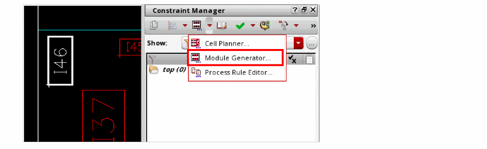
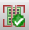

1
Getting Started
This chapter covers the following topics:
- Understanding Module Generators
- Technology File Requirements
- Setting the Default Workspace for Modgen
- Creating a Modgen
- Editing a Modgen
- Specifying Modgen Parameters
- Modifying a Modgen
- Customizing a Modgen
- Quitting the Module Generator Tool
- Regenerating a Modgen
Understanding Module Generators
Module generators are designed to provide a way to generate multiple Pcell instances into a complex, highly matched, structured array. With the Modgen tool, you specify the devices to be arrayed, then specify an interdigitation pattern, insert dummy devices, body contacts, and guard rings. Finally, you control the routing style and generate internal routing geometry.
Module generators can be created from either the schematic or the layout. When you create a Modgen from the schematic, the tool creates a Modgen constraint on the schematic that will then be used when the layout is generated using Generate All From Source or Generate Selected From Source. When run from the schematic, by default, the Modgen creates a temporary physConfig. Use the environment variable to specify a different physconfig that already exists to be used by the Modgen.
To know more about the Modgen Flow in Virtuoso, view or download the
Technology File Requirements
The following Mogen features require specific technology file information.
Routing
Routing in the module generators requires a complete Layout Function section for metal and poly layers and basic width and spacing rules on the metal and poly layers.
Body Contacts
In order to use body contacts in the module generators, you must complete either the Standard Via definition or a custom via definition, which define a connection to well/active layers. In addition, the well and active layers should be defined in the Layer Function section.
Guard Rings
To utilize guard rings in module generators, define your Multiple Part Paths (MPPs).
Technology Group and Constraint Group Support
Modgens read rules from user-defined Constraint Groups as well as the Foundry technology group. The default lookup path for these tools is in the following order:
- Specified tool Constraint Group, which is stored either in the design or in the technology library
- Design-level default Constraint Group
- Foundry Constraint Group, which is stored in the technology library
The tool Constraint Group is stored outside the Foundry Constraint Group. So before running the tool, you need to specify the tool Constraint Group to be used. Use the following environment variables to specify the tool Constraint Group.
Modgen:
While specifying the environment variable, if the string is left empty, then the Foundry Constraint Group is used. If the string has an invalid value, a warning is displayed and then the Foundry Constraint Group is used.
Placement Grid Support
Placement grid support is a method that keeps all shapes on specific grids per layer. The placement grid rule is obeyed at a higher precedence than custom spacing or detailed spacing rules. So, even if, according to the custom spacing rule, an instance is placed off the instance grid, it is automatically snapped to the next nearest placement grid. In addition, the origin of the Modgen FigGroup is placed on the placement grid. This ensures correct placement of instances on their respective placement grids when the entire Modgen is placed by the placer.
Use environment variable chainPermutePins to controls the application of the placement grid rule.
If the aapUsePlacementGrid is set to t, you need to set the following placement grid rules either in the techfile or in a custom Constraint Group that the Modgen refers to.
- horizontalPlacementOffset – Specifies the horizontal offset from the origin for the vertical placement grid
- horizontalPlacementPitch – Specifies the horizontal spacing between each vertical placement grid line
- verticalPlacementOffset – Specifies the vertical offset from the origin for the horizontal placement grid.
- verticalPlacementPitch – Specifies the vertical space between each horizontal placement grid line.
(placementGrids
(verticalPitch 1.0)
(verticalOffset 0.0)
(horizontalPitch 1.5)
(horizontalOffset 0.5)
)
Situation 1: The placement grid values exist and are on the grid with respect to the manufacturing grid
- During placement, the origin of each instance is snapped to the nearest placement grid horizontally and vertically. For the Modgen, the instances are snapped up.
Situation 2: The placement grid values exist, but are not on the grid with respect to the manufacturing grid
Setting the Default Workspace for Modgen
Use the environment variable to specify the default workspace to be loaded when Modgen is invoked. The specified workspace, if available either in the local .cadence directory or in any directory in the CSF hierarchical search, is applied to the current Modgen session. If the workspace is invalid, then a warning message is displayed and the default Modgen Edition workspace is loaded.
You can also create a workspace for the current Modgen session. For detailed information on workspaces and how you define them, see
Creating a Modgen
You can use the Modgen tool to create one placeable object from multiple instances.
Modgens can be created from both, schematic and layout designs.
t.
The modgenReferencePoint environment variable specifies the reference point for aligning Modgens that are either created or repositioned. The default value is center, where the center of the new or edited Modgen is aligned with the center of an existing Modgen. Use modgenCreateReferenceLPP to specify the layer geometry to be used to determine the Modgen’s pattern.
There are several ways to create a Modgen.
Method 1 - Using the Constraint Manager Toolbar
- Select the devices you want to include as one placeable object from the schematic or layout design.
-
Choose Module Generator from the Constraint Manager toolbar.

A new Modgen constraint is created and the Modgen Editor is invoked.
Method 2 - Using the Place Menu
- Select the instances, Modgens, figGroups, and mosaics you want to include as one placeable object from the schematic or layout design.
- Select Place—Modgen—Create/Edit Modgen.
A new Modgen constraint is created. However, the Modgen Editor is not invoked. Use the Modgen on-canvas commands to edit the Modgen directly in the layout canvas.To know more about these commands, see Using the Modgen On-Canvas Commands.
Method 3 - Using Convert to Modgen
A mosaic is a compact array of instances that belong to the same mfactored instance, and therefore have the same master and connectivity. You can convert a mosaic in the layout design to a Modgen. To do this:
- Select the mosaic to be converted into a Modgen.
- Select Edit—Convert—To Modgen. Alternatively, right-click the mosaic in the canvas and choose Convert to Modgen from the shortcut menu.
A new Modgen constraint is created. However, the Modgen Editor is not invoked. Use the Modgen on-canvas commands to edit the Modgen directly in the layout canvas. To know more about these commands, see Using the Modgen On-Canvas Commands.
Method 4 - Using SKILL Functions
Use one of the following SKILL Functions:
-
ciConCreate: Creates the Modgen constraint.
Example 1: Creates a Modgen constraint that includes the specified members. The parameters define the number of rows and number of columns that the Modgen constraint should have:modgen = ciConCreate(cache 'modgen
?members list( list("M0" 'inst) list("M1" 'inst) list("M2" 'inst) list("M3" 'inst) )
?params list( list( "numRows" 1) list( "numCols" 4)
); list
); ciConCreate
Example 2: Includes the pattern parameter, which maps the symbols in the Modgen to the required alphabets.Modgen = ciConCreate(cache ‘modgen
?members list(
list("M0" 'inst list( list("row" 0) list("col" 0)))
list("M0" 'inst list( list("row" 0) list("col" 1)))
list("M1" 'inst list( list("row" 1) list("col" 0)))
list("M1" 'inst list( list("row" 1) list("col" 1)))
); list
?params list(
list( "numRows" 2)
list( "numCols" 2)
list( "pattern" "mapping ( (M0 X) (M1 Y) ) ")
); list
); ciConCreate
-
gpeCreateSandbox: Creates a Modgen sandbox object that includes the specified instances.
Example: Creates a Modgen similar to Example 2 above.sbox = gpeCreateSandbox( ?sync t);
gpeSetMap(sbox list( list("M0" "X") list("M1" "Y")));
gpeSetGrid(sbox list( "X" “X”) list("Y" "Y")));
-
mgCreateModgenAsLayout: Creates a Modgen from the list of selected instances and keeps the instance locations inside the Modgen, as close as possible to their original locations in the layout.
Example: Creates a Modgen in the current editing cellview (geGetEditCellView) that includes all instances current selected (geGetSelSet).mgCreateModgenAsLayout(geGetEditCellView() geGetSelSet())
-
mgCreateModgenConstraintAsLayout: Creates a Modgen constraint that uses the current layout to drive the initial Modgen constraint and row/column assignments.
Example: The following example works only if the current cellview is of the layout type.geGetEditCellViewreturns a valid layout cellview ID. The Modgen includes the instances that are selected in the cellview.mgCid = mgCreateModgenConstraintAsLayout(geGetEditCellView() geGetSelSet())
-
gpeCreateSandbox: Creates a Modgen sandbox object that includes the specified instances.
Example: Creates a Modgen similar to Example 2 above.sbox = gpeCreateSandbox( ?sync t);
gpeSetMap(sbox list( list("M0" "X") list("M1" "Y")));
gpeSetGrid(sbox list( "X" “X”) list("Y" "Y")));
-
mgCreateModgenAsLayout: Creates a Modgen from the list of selected instances and keeps the instance locations inside the Modgen, as close as possible to their original locations in the layout.
Example: Creates a Modgen in the current editing cellview (geGetEditCellView) that includes all instances current selected (geGetSelSet).mgCreateModgenAsLayout(geGetEditCellView() geGetSelSet())
-
mgCreateModgenConstraintAsLayout: Creates a Modgen constraint that uses the current layout to drive the initial Modgen constraint and row/column assignments.
Example: The following example works only if the current cellview is of the layout type.geGetEditCellViewreturns a valid layout cellview ID. The Modgen includes the instances that are selected in the cellview.mgCid = mgCreateModgenConstraintAsLayout(geGetEditCellView() geGetSelSet())
Editing a Modgen
Use one of the following methods to open an existing Modgen in the Modgen editor:
- Double-click the Modgen in the design.
- Double-click the Modgen constraint in the Constraint Manager toolbar.
- Select the Modgen and choose Place—Modgen—Create/Edit Modgen.
- Select the Modgen and choose the Module Generator icon in the Constraint Manager assistant toolbar.
- Select the Modgen figGroups in the layout canvas, right click, and select Edit Modgen.
Corresponding SKILL function: mgCreateOrEdit
(Layout only) If you launched Modgen from the layout, place the module in the layout.
The module appears in the layout window, and the layout window moves into Module Generator Edit mode. The default workspace is displayed. You can either use the existing default workspace or define a different workspace and set it as the default workspace. For more information about setting a different default workspace, see Modifying a Modgen.
Here is a quick look at the default workspace:
The following toolbars are specific to Modgen:
As with all other toolbars, you can enable or disable the Modgen toolbars by right-clicking anywhere in the main toolbar area and selecting the required toolbar name. You can use the handle on the left hand side of the toolbar to reposition it anywhere within the Modgen editor.
You can use the Toolbar Manager to make incremental and local changes to the Modgen toolbars. For example you can add, edit, or remove toolbar items. For more information about Toolbar Manager, see
-
If geometry is added or deleted from the Modgen, then the Modgen constraint will become disabled. This means that it is no longer a Modgen. However, it will remain a figGroup of type
none. - If the geometry is accidentally added or deleted, it can be removed or re-added by undoing the operations (pressing the 'u' key). Invoking undo will actually remove (or re-add) the geometry and re-enable the Modgen constraint.
-
If the geometry was purposely added, then the user can exit the Modgen Editor and the result will be a standard figGroup.
Specifying Modgen Parameters
You can now set up the module generator parameters, including the number of rows, number of columns, the type of router, the interdigitation pattern, etc. These parameters are specified in the Module Generator panel at the bottom right.
- In the Module Generator panel, specify the number of rows for the array in the Nb of Rows field.
-
In the Nb of Cols field, specify the number of columns you want in the array.
You can now do any of the following:
- specify an interdigitation pattern for this module and save the pattern for future use (see Setting Up the Custom Interdigitation Pattern File and Using the Modgen Pattern Editor)
- specify dummy device properties and add dummy devices (see Creating Dummy Devices)
- specify properties for body contacts and add body contacts to the module (see Adding Body Contacts)
- specify guard rings on the module (see Specifying Guard Rings)
- define topology patterns and creating pin to trunk routes (see Creating Topology Patterns and pin-to-trunk Routing)
-
abut devices (see Abutting Devices)The Module Generator commands are all invoked from the Module Generator form, pop-up menus, and the Modgen toolbar. Typical Virtuoso commands such as Edit—Delete are not supported in the Modgen Editor mode. If you want to perform some interactive customizations, such as moving devices inside a Modgen, then you need to first disable the Modgen constraint by selecting it in the Constraint Manager and setting the Enabled parameter to False. This will turn the Modgen into a standard database figGroup. Then you need to do an Edit in Place to customize the Modgen. Any operation, such as UCN, should not affect any custom edits in this state. This operation should only be done if you are satisfied with the final layout and configuration of the Modgen. After making these modifications, if you re-enable the Modgen constraint by setting the Enabled parameter to True, then all modifications performed outside the Modgen environment will be lost.1
Modifying a Modgen
Once you have created a Modgen, you can modify any of its properties.
To modify a module from the schematic or layout:
- Select the Modgen constraint in the Constraint Manager.
-
Click the Modgen
icon.
The Modgen Editor appears.
Customizing a Modgen
To customize the Modgen geometry after the Modgen has been created and edited using the Modgen editor in the Layout Editor, disable the Modgen constraint. That will change the Modgen FigGroup type to none, which will then allow you to utilize Hierarchy — Edit In Place to customize any of the Modgen geometry, or add any geometry to the FigGroup.
Any geometry that was created or customized inside the FigGroup will be discarded and replaced with the regenerated Modgen geometry. Other edits or customizations in the cellview, such as constraint addition/deletion/editing or instance parameter changes will be retained.
Quitting the Module Generator Tool
When you are finished specifying your module, you can quit Module Generator mode.
Use one of the following methods to quit the Modgen mode:
- Click the Close button in the upper-right corner of the window.
- Click the Exit  icon on the toolbar.
-
Use the
Shift+Bkey combination. - Right-click to display the shortcut menu and select Exit Modgen.
The Module Generator now creates a new Modgen constraint. When you start Virtuoso Layout Suite and Generate from Source, this module generator constraint is transferred to the layout and respected during analog auto placement.
Use the environment variable to control the behavior when the Modgen Previewer window is closed using the Close button.
You can set this environment variable to one of the following values:
-
prompt: A pop-up message is displayed requesting for confirmation whether changes to the Modgen need to be saved. Choose Yes to save changes, No to discard changes, or Cancel to reject the closing of the window. -
yes: No pop-up is displayed. Instead, all modifications are saved and the window is closed. -
no: No pop-up is displayed. Instead, all modifications are discarded and the window is closed.
Regenerating a Modgen
After performing certain tasks, such as moving a Modgen from one placement area to another, you may want to regenerate the Modgen. Here are the steps to regenerate a Modgen:
- Select one or more Modgen-type figGroups in the layout canvas.
- Right-click to display the shortcut menu.
- Select Regenerate Modgen.
Corresponding SKILL API: mgRegenerateModgen
Return to top